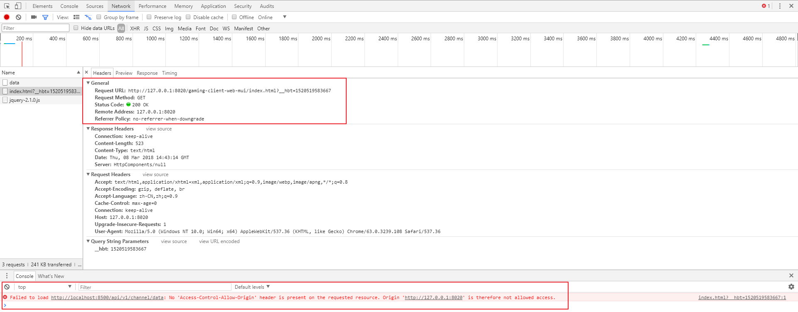
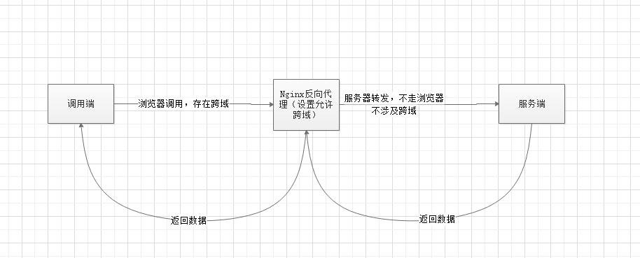

概述
在浏览器端进行 Ajax 请求时会出现跨域问题，那么什么是跨域，如何解决跨域呢？先看浏览器端出现跨域问题的现象，如下图所示

什么是跨域问题
跨域，指的是浏览器不能执行其他网站的脚本。它是由浏览器的同源策略造成的，是浏览器对 JavaScript 施加的安全限制
这里说了跨域是浏览器的同源策略造成的，也就是只有浏览器会存在跨域，这是浏览器行为！！！
什么是同源
所谓同源是指，域名，协议，端口均相同 ；只要有一个不同浏览器就认为跨域。
- http://www.funtl.com –> http://admin.funtl.com 跨域
- http://www.funtl.com –> http://www.funtl.com 非跨域
- http://www.funtl.com –> http://www.funtl.com:8080 跨域
- http://www.funtl.com –> https://www.funtl.com 跨域
如何解决跨域问题
使用 CORS（跨资源共享）解决跨域问题
CORS 是一个 W3C 标准，全称是”跨域资源共享”（Cross-origin resource sharing）。它允许浏览器向跨源服务器，发出 XMLHttpRequest 请求，从而克服了 AJAX 只能同源使用的限制。
CORS 需要浏览器和服务器同时支持。目前，所有浏览器都支持该功能，IE 浏览器不能低于 IE10。整个 CORS 通信过程，都是浏览器自动完成，不需要用户参与。对于开发者来说，CORS 通信与同源的 AJAX 通信没有差别，代码完全一样。浏览器一旦发现 AJAX 请求跨源，就会自动添加一些附加的头信息，有时还会多出一次附加的请求，但用户不会有感觉。因此，实现 CORS 通信的关键是服务器。只要服务器实现了 CORS 接口，就可以跨源通信（在 header 中设置：Access-Control-Allow-Origin）
所以说CORS方案的瓶颈在于服务器是否支持，如果自己开发的服务端可以使用这种方法；如果是第三方服务端，我们没法修改，所以需要采取其他方法
使用 JSONP 解决跨域问题
JSONP（JSON with Padding）是 JSON 的一种“使用模式”，可用于解决主流浏览器的跨域数据访问的问题。由于同源策略，一般来说位于 server1.example.com 的网页无法与 server2.example.com 的服务器沟通，而 HTML 的 元素是一个例外。利用 元素的这个开放策略，网页可以得到从其他来源动态产生的 JSON 资料，而这种使用模式就是所谓的 JSONP。用 JSONP 抓到的资料并不是 JSON，而是任意的 JavaScript，用 JavaScript 直译器执行而不是用 JSON 解析器解析（需要目标服务器配合一个 callback 函数）。
CORS 与 JSONP 的比较
CORS 与 JSONP 的使用目的相同，但是比 JSONP 更强大。
JSONP 只支持 GET 请求，CORS 支持所有类型的 HTTP 请求。JSONP 的优势在于支持老式浏览器，以及可以向不支持 CORS 的网站请求数据
使用 Nginx 反向代理解决跨域问题
什么是Nginx以上跨域问题解决方案都需要服务器支持，当服务器无法设置 header 或提供 callback 时我们就可以采用 Nginx 反向代理的方式解决跨域问题。
环境
http://192.168.0.104:8888：本地文件上传服务接口
http://192.168.0.104:8080：本地界面，需要使用上传服务接口
upload.myshop.com：nginx服务器，在本地修改Host得来的域名
以下为文件上传的跨域配置方案：
1 | user nginx; |
Nginx解决跨域原理
环境
http://192.168.0.104:8888：本地文件上传服务接口，以下简称服务端
http://192.168.0.104:8080：本地界面，需要使用上传服务接口，以下简称调用端
upload.myshop.com：nginx服务器，在本地修改Host得来的域名
没有Nginx情况下
此时，调用端直接通过Ajax或其他调用服务端，此时发生在浏览器，服务器会向服务端确认是否支持跨域，来决定请求生不生效
然后请求失败。
Nginx
此时请求方式为，调用端直接通过Ajax或其他调用upload.myshop.com，此时发生在浏览器；浏览器向nginx确定他是否支持跨域，上面nginx的配置已经声明了支持跨域。
因为它加入了一些header，还判断了OPTIONS请求（这涉及简单请求和复杂请求，请自行百度）。不管哪一种方式，我们的配置足以。
然后nginx反向代理到服务端，注意~~。此时nginx到服务端没有浏览器，不会触发跨域。nginx将服务端的数据返回给调用端，即完成请求

以上为自我理解，如有不对，请多多包涵。